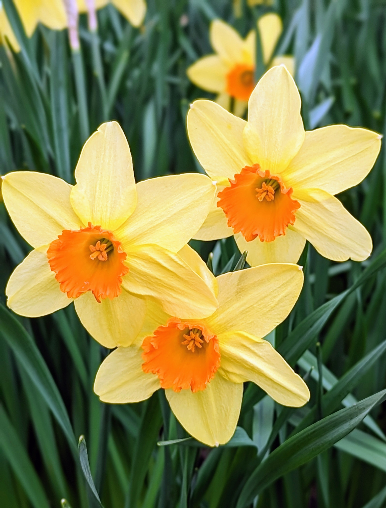
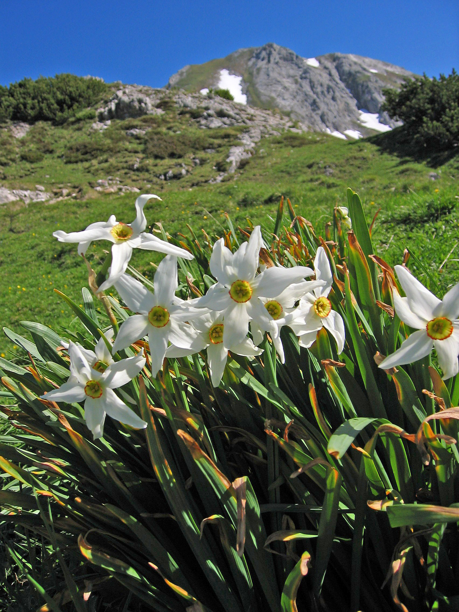
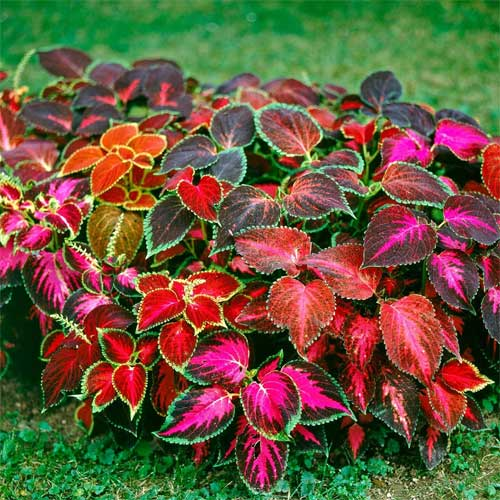
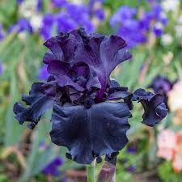
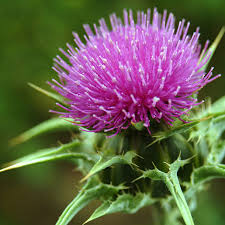
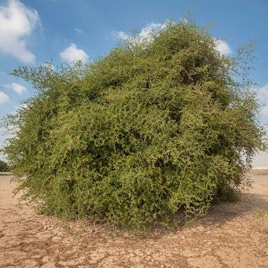

Daffodils are beautiful flowering plants known for their bright yellow blossoms. They symbolize rebirth and are grown in Jordan for ornamental purposes.

Jasmine is widely loved for its fragrance and is often found in Jordanian gardens. It is also used in perfumes and teas.

Coleus, also known as painted nettle, is a colorful ornamental plant that thrives in Jordan's climate and is popular in home gardens.

The Black Iris is Jordan's national flower and a rare species that grows in limited areas. It represents resilience and beauty.

A rare medicinal plant in Jordan, used traditionally for liver treatments and other herbal remedies.

Found in desert areas, this rare plant provides fruits and shade, with cultural and medicinal importance in Jordan.